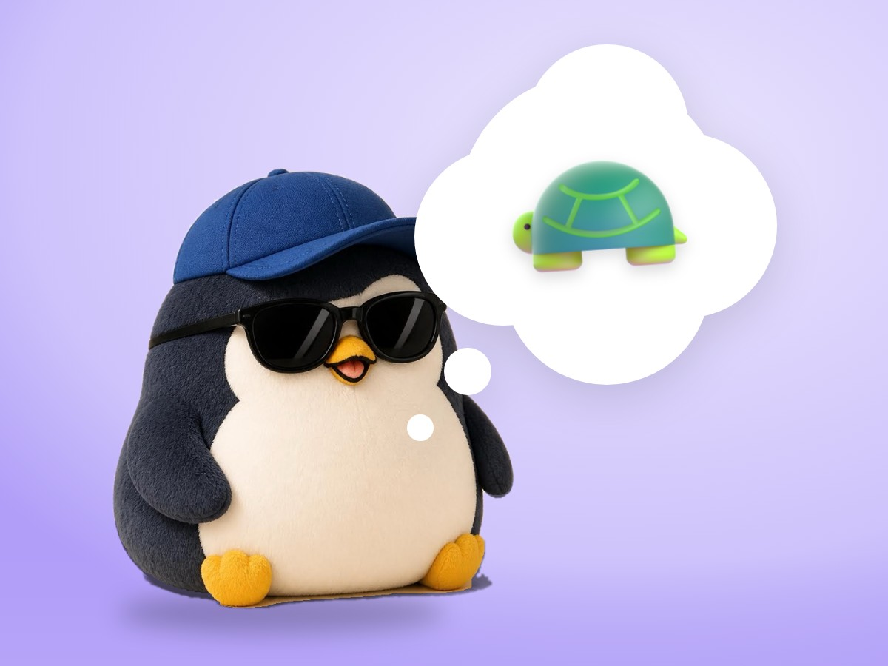

📝 DRAFT · 下書き — まだ本番に出していません · 下書き一覧
🐧 EVERYDAY LIFE⚡ 21 SEC
Before you talk in front of people, make 3 things slow 🐢

3 Slow Things
It seems it is good to make 3 things slow when you talk in front of people: breath, moves, and words.
The Steps
When your name is called, stand up slowly, push in your chair, and look around the room.
Take 1 breath, and then start talking.
⚡ TRY IT
The slow-motion start
Your name is called. Do each step slowly. If you tap again while it is moving, you rush.
- ⬆️ Stand up slowly
- 🪑 Push in your chair
- 🔄 Look around the room
- 🌬️ Take 1 breath
- 🎤 Start talking
🎤 Your voice:
🐢 calm⚡ shaky
🎤 "Hello, everyone."🎤 "H-h-hello, every… everyone!"
🐢 A perfect slow start! Your voice is calm.
🙂 A little fast. Your voice shook a bit.
⚡ Too fast! Your voice is shaking. Try it slower.
Like A Bike
Talking in front of people is like riding a bike: with practice, one day you suddenly can do it.
📚 I learned this from the Japanese blog "Panda no Ondo".